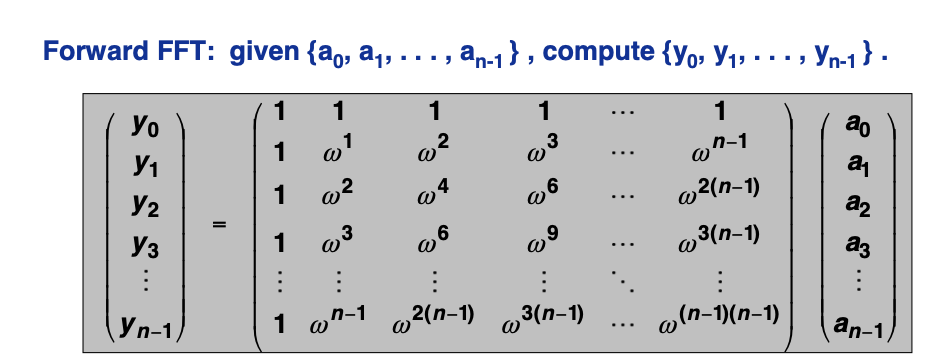

Fast Fourier Transform
-
Polynomials can be represented in two ways : Coefficient representation and Point-Value representation
-
Coefficient representation
Let there be two polynomials `p(x)=a_0+a_1x+a_2x^2+....+a_(n-1)x^(n-1)` and `q(x)=b_0+b_1x+b_2x^2+....+b_(n-1)x^(n-1)`
- Addtion (`O(n)`) : `p(x)+q(x)=(a_0+b_0)x+(a_1+b_1x)+......+(a_(n-1)+b_(n-1))x^(n-1)`
- Evaluation (`O(n)`) : a_0+(xa_1+x(a_2+.....+x(a_(n-2)+x(a_(n-1))...))
- Multiplication (`O(n^2)`) : `(a_0b_0) + (a_0b_1+a_1b_0)x + ...... + (sum_(k=0)^(j)a_kb_(j-k))x^j+......+a_(n-1)b_(n-1)x^(2n-2)`
-
Point-Value Representation
Uniquely specified by knowing `p(x)` at different values of `x`.
`{(x_0,y_0),(x_1,y_1),(x_(n-1),y_(n−1)}, where y_k = p(x_k)`
Let there be two polynomials, `y_k=p(x_k)` i.e. `{(x_0,y_0),.....,(x_(n-1),y_(n-1))}` and `z_k=p(x_k)` i.e. `{(x_0,z_0),.....,(x_(n-1),z_(n-1))}`
- Addtion (`O(n)`) : `p(x)+q(x)=(a_0+b_0)x+(a_1+b_1x)+......+(a_(n-1)+b_(n-1))x^(n-1)`
- Multiplication (`O(n)`) : `{(x_0 , y_0+z_0),(x_1 , y_1+z_1),.....,(x_(n-1) , y_(n-1)+z_(n-1)}` but it requires `2n` points
- Evaluation (`O(n^2)`) : Using Lagrange's formula
-
- If we use coefficient-form we get `O(n^2)` for multiplication while `O(n)` for evaluation. Similarly, if we use point-value form, we get `O(n)` for multiplication while `O(n^2)` for evaluation . FFT does both in `O(nlogn)`. All we are required to do is to interconvert between these forms.
- 